This tutorial shows how software developers can use BCT to identify a silent regression fault in a small library class, WorkersMap. Class WorkersMap is a map that keeps trace of the salary of a collection of workers (identified by a string id). Class WorkersMap provides also some utility methods:
The second version of the library, WorkersMap-v2 contains a fault introduced after a bug fix on line 23 of file WorkersMap.cpp.
In version v2 of WorkersMap, software developers modified the implementation of method getSalary. In version v2, method WorkersMap.getSalary returns -1 if the person id passed as parameter does not correspond to a worker. The stable version of the program mehod WorkersMap.getSalary returned NULL if the person id passed as parameter did not correspond to a worker. The change was performed because NULL corresponds to 0, thus the original implementation of WorkersMap.getSalary did not permit to distinguish between the case of a worker without a salary and the case of a person who is not a worker.
The change in method getSalary in version v2 may lead to failures in method getAverageSalary, which returns a wrong result if some of the person ids passed to the list do not belongs to workers.
WorkersMap and WorkersMap-v2 comes with a set of test cases, implemented in WorkersMap_test.cpp that do not reveal the fault in v2. BCT idnetifies a behavioral anomaly that pinpoints the error.
Following paragraphs show how to use BCT to identify teh regresison fault. For completeness we provide WorkersMap-v2 with an additional test case, WorkersMap_bug.cpp, that exposes the fault, but we will not use this additional test case in this tutorial.
We provide an Eclipse workspace with two versions of WorkersMap (for simplicity we provide the two programs as Eclipse projects, but softwrae developers can use BCT to monitor projects build outside Eclipse).
Download the compressed workspace with the two C++ project from this url
http://www.lta.disco.unimib.it/downloadsLTA/tools/bct/workspaceCPP_RegressionExample.tar.gz.
Uncompress the .tar.gz workspace, for example in ~/workspaceCPP_RegressionExample.
Then compile the two C++ projects:
cd ~/workspaceCPP_RegressionExample/WorkersMap/Debug
make clean
make
cd ~/workspaceCPP_RegressionExample/WorkersMap/Debug
make clean
make
Then open the workspace in Eclipse:
path/to/eclipse -data ~/workspaceCPP_RegressionExample/
To use BCT to identify silent regression faults, software developers need first to create a BCT C++ Monitoring configuration.
Software developers can create the BCT monitoring configuration either in one of the two projects of the workspace, or in a separate project. We create a separate project by clicking on New>Project>Generic>Project. We name the project WorkersMap_validate.
Software developers can create a new configuration by right clicking on the project where they want to save the BCT monitoring configuration and clicking on new>Other>BCT>BCT C/C++ Regression Configuration..
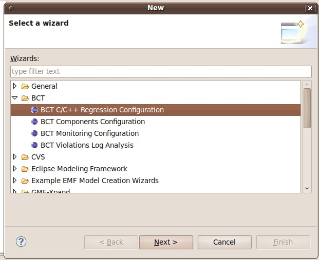BCT then asks the software developer to enter a name for the new configuration, we used WorkersMap-v2-validation.
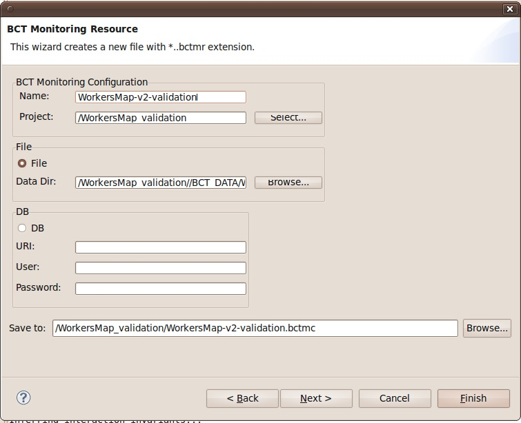After software developers press next, BCT asks the source folder of the stable and modified version of WorkersMap. Enter ~/workspaceCPP_RegressionExample/WorkersMap/src and ~/workspaceCPP_RegressionExample/WorkersMap-v2/src (write your HOME dir path instead of the ~ symbol).
BCT also asks the location of the executable of the two projects. Use the test cases runner if you intend to monitor unit test cases execution. For this project we used ~/workspaceCPP_RegressionExample/WorkersMap/Debug/WorkersMap and ~/workspaceCPP_RegressionExample/Debug/WorkersMap-v2. When the software developer presses the Finish button BCT compares the two softwrae projects to identify the modified functions and determines how to monitor the two projects for changes. Then BCT creates the monitoring configuration file WorkersMap_validate/WorkersMap-v2-validation.mrc.
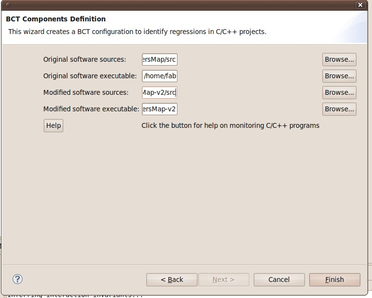If software developers double click on the monitoring configuration file WorkersMap_validate/WorkersMap-v2-validation.mrc a specific editor opens. This editor shows three tabs: Resource location, Components Configuration, Regression Analysis Configuration.
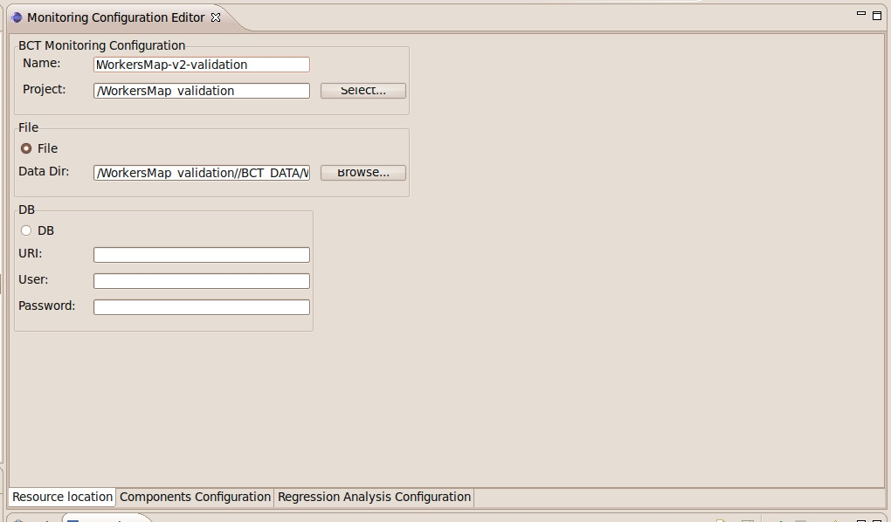Tab Components Configuration shows the monitored functions. The list item named ModifiedFunctions contains the list of functions that have been modified in version v2, and that will be monitored by BCT. To show the modified functions users can click on ModifiedFunctions and press Edit.
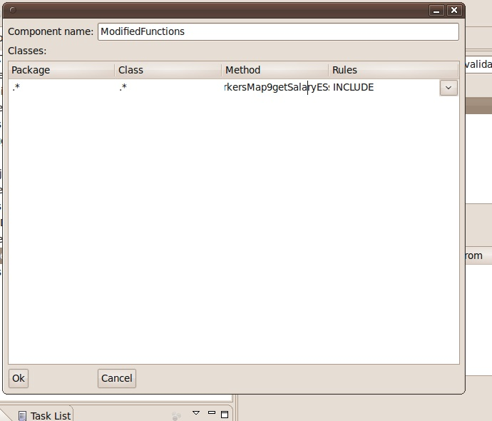Tab Regression Analysis Configuration shows the locations of the files to monitor. By clicking on button Refresh components to monitor softwrae developers can update the list of monitored components after performing some more changes to their program, e.g. after modifying another method of WorkersMap.
The Help button in the Regression Analysis Configuration tab of the Monitoring configuration editor shows the commands to execute to monitor the two programs.
Execute the following commands to monitor the stable version of WorkersMap
cd ~/workspaceCPP_RegressionExample/WorkersMap/Debug
GDB_CONFIG=~/workspaceCPP_RegressionExample/WorkersMap_validation/BCT_DATA/WorkersMap-v2-validation/conf/files/scripts/originalSoftware.gdb.config.txt
GDB="gdb -batch -silent -n -x $GDB_CONFIG --args"'
$GDB ./WorkersMap
Execute the following commands to monitor the buggy version of WorkersMap
cd ~/workspaceCPP_RegressionExample/WorkersMap/Debug
GDB_CONFIG=~/workspaceCPP_RegressionExample/WorkersMap_validation/BCT_DATA/WorkersMap-v2-validation/conf/files/scripts/originalSoftware.gdb.config.txt
GDB="gdb -batch -silent -n -x $GDB_CONFIG --args"'
$GDB ./WorkersMap-v2
At this point two trace files are available in the workspace: one for the stable version of the software, WorkersMap_validation/BCT_DATA/WorkersMap-v2-validation/validTraces/gdb.monitor.txt, one for the new (and buggy) version, WorkersMap_validation/BCT_DATA/WorkersMap-v2-validation/tracesToVerify/gdb.monitor.txt. Press F5 on the WorkersMap_validation project to refresh folder contents if you do not see the traces.
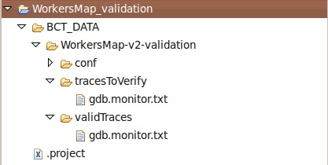After monitoring the test cases of WorkersMap and WorkersMap-v2, software developers can use BCT to check if some fault affects the the system.
Software developers can infer models of the behavior of the stable softwrae version by right clicking on the monitoring configuration file, and by selecting BCT/Infer Models. A wizard with different options will open. Software developer can use the default options of the wizard to infer useful models.
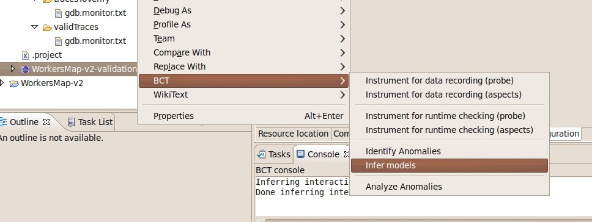 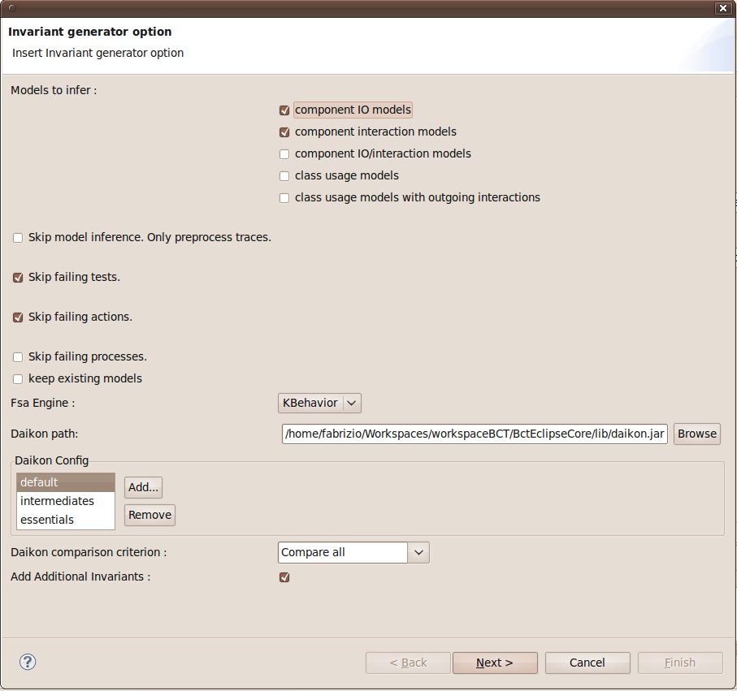 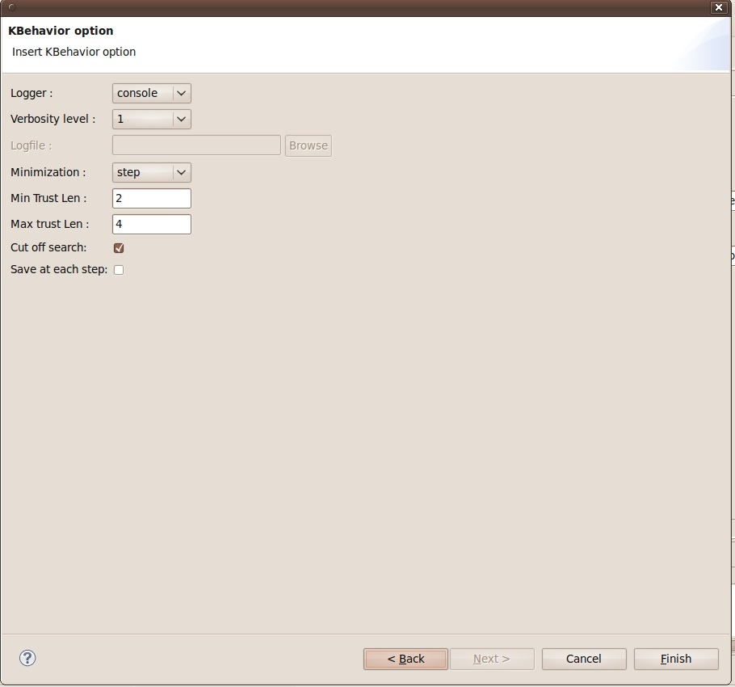The BCT model inference process first generates readable traces with the values recorded by BCT.
From the Project Explorer view software developers can inspect the raw data by expanding the monitoring configuration item and the subfolder Raw Recorded Data/IO Traces/Environment/. This folder show the mangled names of the methods/functions monitored by BCT.
By clicking on one of these function names, e.g. WorkersMap_cpp.ES...getSalaryESs(), software developers can open the data recorded. Following figure shows the data recorded at the entry and exit point of method WorkersMap.getSalary.
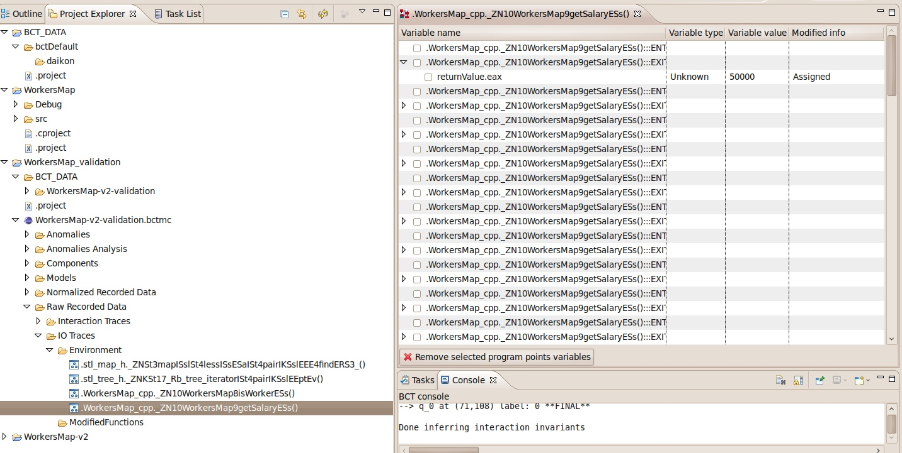By clicking on Raw Recorded Data/Interaction Traces/Environment/ Software Developers can inspect the sequence of methods monitored by BCT. By clicking on button Switch to Tree View softwrae developers can visualize the sequences of monitored methods as a tree. BCT can be used to record multithreaded program or different program executions. In these cases BCT visualizes the sequence of methods executed by each thread of each program execution (BCT call each program execution Session).
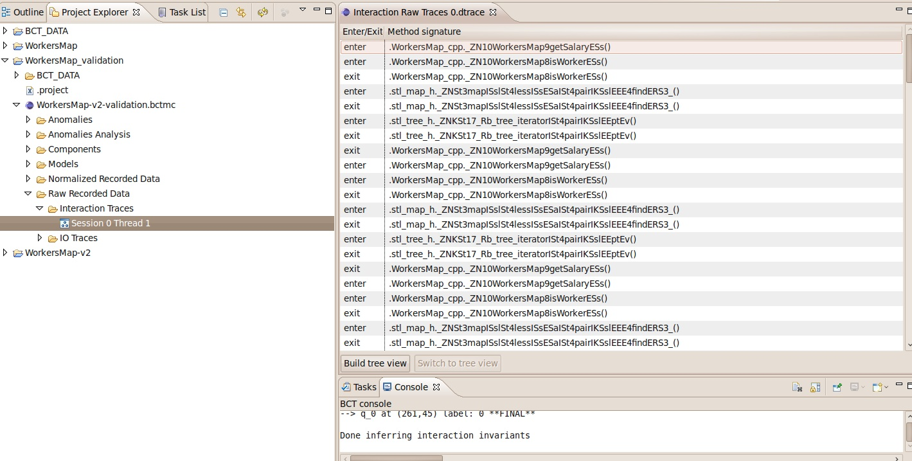 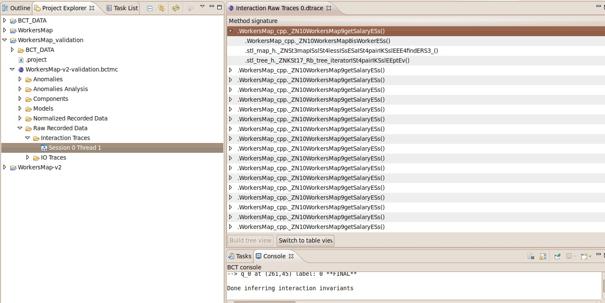By expanding folder WorkersMap_validation/WorkersMap-v2-validation.bctmc/Models/IO/Environment/ softwrae developers can see the I/O models, i.e. constraints that hold on input and output parameters of the monitored methods. The following figure shows the I/O models for method getSalary. They indicate that the return value is always greater than zero or equal to zero.
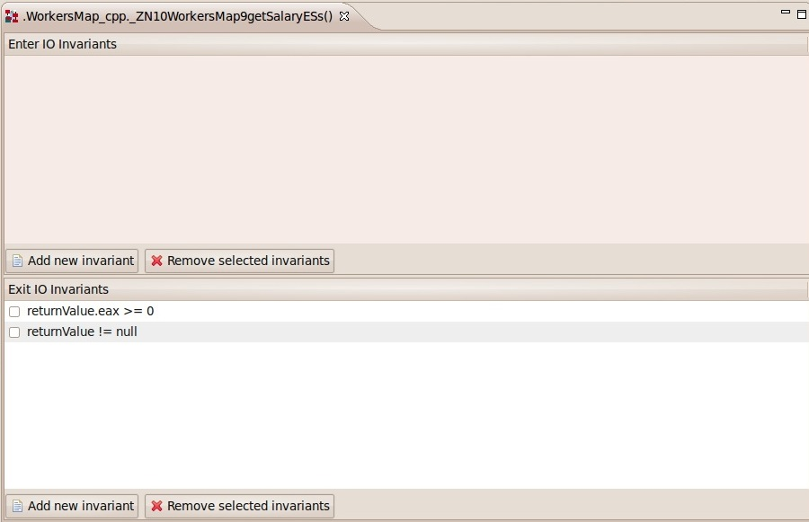By expanding folder WorkersMap_validation/WorkersMap-v2-validation.bctmc/Models/Interaction/Environment/ software developers can inspect the interaction model of each monitored method. Interaction models are Finite State Automata that generalize the sequences of methods invoked by a method monitored by BCT (i.e. a function modified in the new software or a caller of a modified function). Following Figure shows the intraction model for method getSalary.
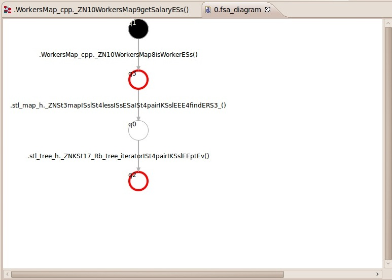Software developers can identify anomalies in the behavior of the modified software by right clicking on the monitoring configuration file WorkersMap_validation/WorkersMap-v2-validation.bctmc, and selecting BCT/Identify Anomalies. BCT runs a background job to identify anomalies and then starts a wizard for the analysis of the anomalies found, if any.
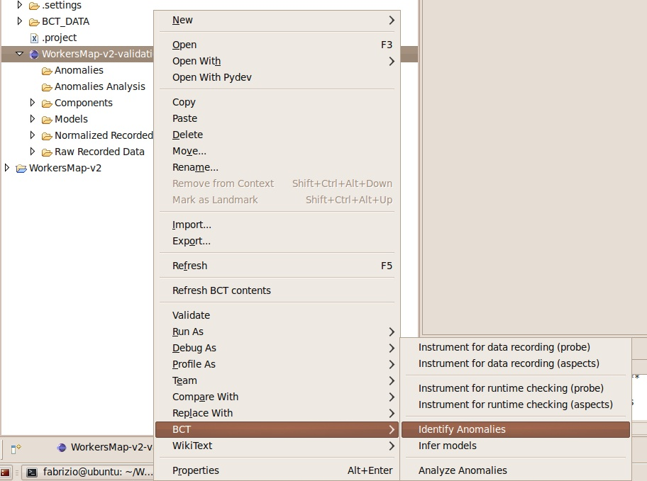 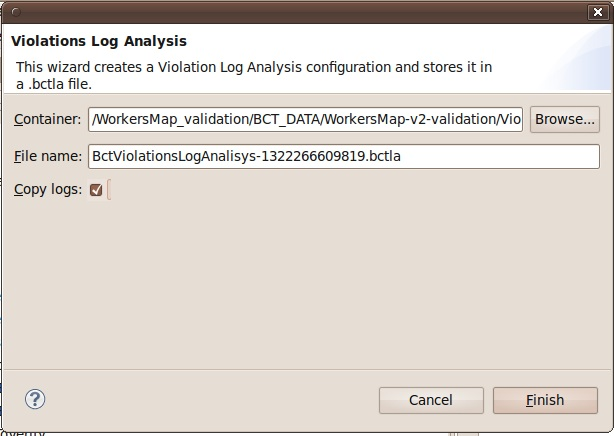After pressing Finish on the Violations Log Analysis Wizard the Violation Analysis editor opens.
Tab Violations shows the model violations identified by BCT.
By opening the Properties view software developers can inspect the detail of each violation.
After unselecting option Group by method software developers see 6 violations for the model returnValue.eax >= 0,
which means that method getSalary returned a value lower than zero in in the new software version.
The properties view shows the actual value for the value returned by method getSalary when the violation is detected by BCT: -1 (this value is stored in register eax at runtime).
This model violation is caused by the change performed by the software developers.
By inspecting the stack trace of the violations software developers can see that the change in the invariant may
lead to misbehaviors in method getAverageSalary: the violation if fact occurrs in line 48 of file WorkersMap.cpp,
where there is still the check getSalary(*i) == 0 which may lead to failures at runtime
(we are currently extending the set of models to better pinpoint relations between callers and callees to ease the identification of regression faults like this).